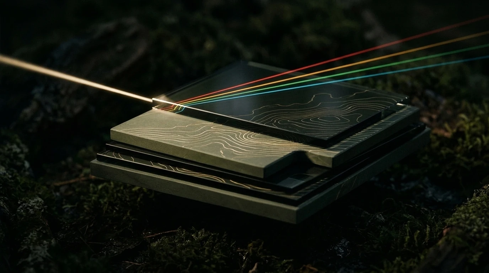
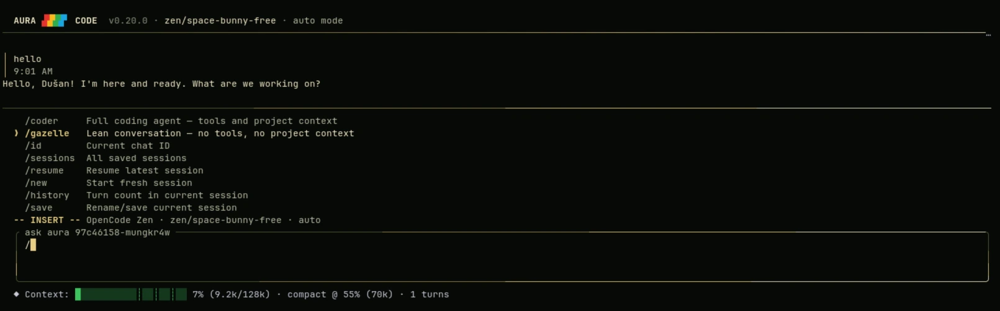
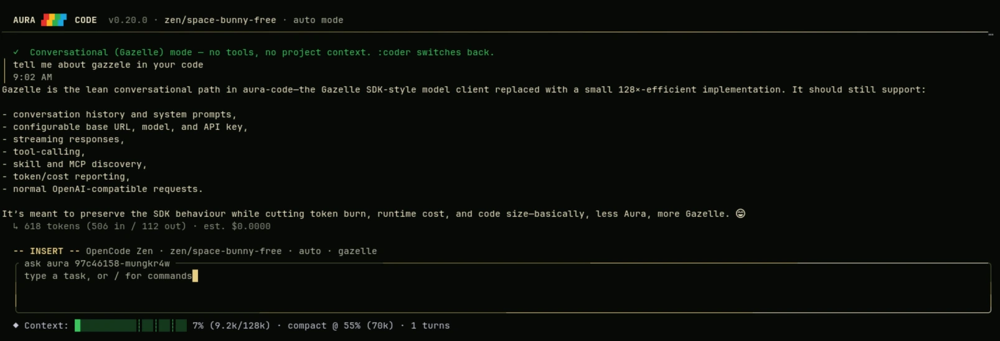
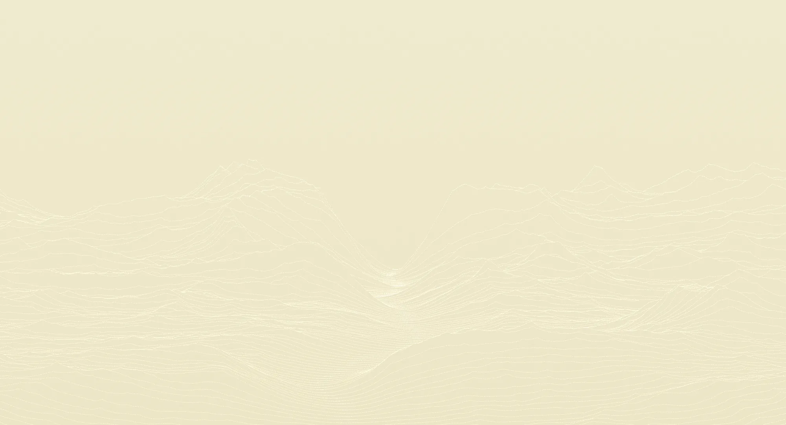

Kernel-enforced jail
On Linux with bubblewrap, Aura re-execs into an unprivileged namespace: installed code is read-only and writes outside the repo fail with EROFS.
Aura Code is an autonomous, model-agnostic coding agent with persistent local memory, a full terminal UI, and a browser workstation. Give her a task in plain English — she reads the repo, plans, edits, verifies, and writes the lesson down in ~/.aura/memory/.
Most coding agents give you one vendor's model and one locked workflow. Aura puts the model, the tools, the memory, and the training data back on your own disk — and still starts with a single command.
What broke last week, what your build actually needs, and project conventions live in plain files under ~/.aura/memory/. Wrong lessons drop permanently with :forget.
The Archimedes layer tracks competence per task pattern, lets a local model attempt what it has earned, verifies every answer, and escalates to the cloud only when needed.
:mine clusters episodes and exports escalation corrections (--corrections) into structured JSONL rows under training-data/ ready for local fine-tuning.
Skills, plugins, MCP servers, and subagents are ordinary files on disk. Extending Aura is a conversation, not waiting on a vendor's roadmap.

Settled identity and preferences injected cleanly without re-sending raw history. Inspect everything learned with :lessons or consolidate with :dream and :rem.
Run aura in any terminal for the interactive TUI, or launch webaura (aura serve) for the Nature-themed Web Studio — Kanban execution board, visual Workflow DAG, live sandbox Canvas, code editor with PTY terminal, agent roles, and autonomy gates.
webaura · :auraweb
Four live lanes — Planning, Preparation, Execution, Finished — that actually dispatch tasks to independent agent sessions, enforce writer locks (:nerds), and return verified diffs onto the tile.
Most questions you ask an agent are not coding tasks. Asking about an architecture decision should not re-send 25 tool schemas and a project tree every turn. Switch inside any session with /gazelle and step back into tools with /coder.
Pair with RTK (Rust Token Killer) on PATH for 80% fewer input tokens on shell and git output, a 80k token compaction cap (/ct), and a cumulative 1M net-of-cache session ceiling.

/gazelle, /coder, /nolimit).
:coder when tools are needed.A local model attempts tasks first, verified against actual tool evidence across contradiction, completeness, and specificity checks. When local confidence is unproven or a check rejects the answer, Aura escalates to your frontier model and records the correction episode.
Failure-padded competence estimator (v0.20.8): ŝ(t) = accepts / max(n, m₀). Missing evidence never counts as confidence — a single lucky attempt scores 1/3, not 100%.
ŝ = 3 / max(4, 3) = 0.75
Competence 0.75 clears threshold 0.70. Archimedes runs read-only tools first, then passes the verification gate before returning.
Override live inside any TUI session with :archon, :archoff, :small1, :archmodel <tag>, or audit actual spend vs counterfactual large-model cost with :cost.
{
"archimedes": {
"enabled": true,
"modelName": "granite4.1:3b",
"ollamaBaseUrl": "http://localhost:11434/v1",
"competenceThreshold": 0.7,
"minAttempts": 3
}
}
// Runtime TUI toggles (current session)
:archon → force local alternation on
:archoff → send straight to cloud model
:small1 → probe small tier past cold gate
:cost → inspect ~/.aura/cost-log/*.jsonl

Same persistent memory, same permission gate, whether editing TypeScript, recording a workflow once, driving the desktop, or answering on Telegram.
On Linux with bubblewrap, Aura re-execs into an unprivileged namespace: installed code is read-only and writes outside the repo fail with EROFS.
Records keyboard and mouse via evdev, compiles intent into steps, and replays with fresh screenshots instead of brittle screen coordinates.
Commission engine routing Swiss International, Risograph, Broadsheet, or Blueprint into standalone web, slide deck, or print PDF artefacts.
Native Sway/wlroots screen inspection and pointer control gated behind explicit disclosure, or exposed to any stdio MCP client.
Voice notes, live provider switching, file transfer, and webcam snapshots. Answers nobody without paired allowed_user_ids and refuses secret stores.
Dispatch parallel read-only specialists (--moa, :council, 5-seat :ecclesia) or queue single-writer parallel work with :nerds.
Read PDFs without poppler, search the web (Brave, Tavily, DuckDuckGo), transcribe audio, pull YouTube transcripts, and schedule recurring jobs.
Mines past failures for prompt weaknesses (--propose-harness) and auto-reverts any patch that regresses the test suite.
Every descriptor in src/providers/provider-descriptors.ts resolves routing prefixes, API key env vars, reverse URL guards, and client wiring from a single table — keeping 42 routing prefixes in sync without drift.
gemini/) with per-modality cached token billing and strict model filtering.vertex/, google-vertex/) resolved with project and region endpoints.ArchimedesModel.The theoretical assumptions and deployment audits behind Aura's memory, competence gating, and outcome harvesting live alongside the source tree.
Replaces expensive binary correctness gates with outcome harvesting, establishing the always-win property where valid answers ship work and rejections yield labeled failure traces for fine-tuning.
Audits 1,225 production episodes (143/143 served tasks verified), formalizes break-even routing q > c_S / c_L, and introduces the failure-padded competence estimator ŝ = accepts / max(n, m₀).
Requires Node.js ≥ 18. Start with any frontier API key, run completely offline with local Ollama via --profile local, or open the browser workstation with webaura. Keys saved via :apikey override stale shell exports.
$ npm install -g aura-code $ export DEEPSEEK_API_KEY=sk-... $ aura 'refactor the auth module to use JWT'
$ aura --profile local 'explain src/archimedes/alternator.ts' $ webaura # launches Kanban, Workflow DAG, Canvas & Code Studio
~/.aura/ (or $AURA_HOME): identity, global lessons, episodes, cost logs, and per-repo .aura/lessons.md. Aura never syncs your memory to a hosted SaaS store.aura --sandboxed runs inside an unprivileged bubblewrap namespace where installed files are read-only and writes outside the repo fail at the kernel level with EROFS. In normal mode, dangerous shell commands, cron jobs, MCP connections, and suspect outbound web_fetch requests trigger explicit confirmation prompts.aura --profile local against Ollama or LM Studio on your own machine, or use zero-cost routing tiers such as OpenCode Zen (zen/), Groq, Cerebras, or Google AI Studio free endpoints.site/img/ & site/media/), while the active product across the TUI, Web Studio, Windows manual, and Aura adOS wears the unified Aura Nature visual identity.